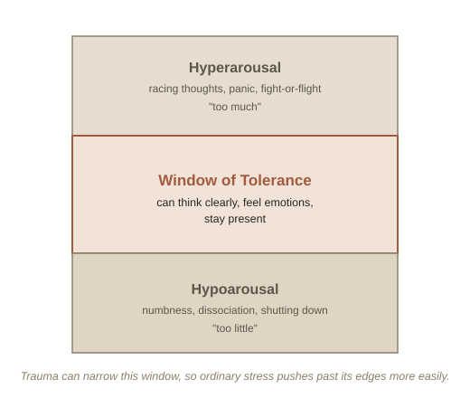

Chapter 1: The Body Keeps Score Even When the Mind Moves On
Ask someone to recall a boring meeting from three years ago and they'll struggle to get any details right. Ask a combat veteran about a firefight from thirty years ago, and — sometimes without warning — their heart rate spikes, their palms sweat, and their body reacts as if it's happening right now. Ordinary memories fade and get reconstructed loosely. Certain kinds of overwhelming experience don't behave like that at all — and psychiatrist Bessel van der Kolk built a career, and a controversial but influential book, around the argument that this difference is the whole story of trauma.
Trauma isn't the event — it's what happens to the nervous system
The technical distinction matters here: not everything difficult or painful is traumatic in this clinical sense. What defines trauma, in van der Kolk's framing, is that the experience overwhelms the nervous system's normal capacity to process it — the event gets stored differently than an ordinary memory, partly as sensation and physical reaction rather than as a clear, ordered narrative. This is why survivors often can't produce a clean timeline of what happened even when they desperately want to, while a smell, a sound, or a posture can instantly trigger a full-body reaction with no conscious story attached to it at all.
The window of tolerance
A useful model here, developed by psychiatrist Dan Siegel, is the window of tolerance — the zone of arousal where someone can think clearly, feel their emotions, and stay present. Push above that window and you get hyperarousal (hyper- = over; a nervous system stuck in "too much" — racing thoughts, panic, anger): fight-or-flight, activated even when there's no actual threat in the room. Drop below it and you get hypoarousal (hypo- = under; a nervous system stuck in "too little" — numbness, dissociation, shutting down): freezing, emotional flatness, a feeling of watching your own life from outside it. Trauma, on this model, is partly what happens when someone's window narrows — ordinary stress that used to stay comfortably inside it now regularly pushes them out of it in one direction or the other.

Why "just talk about it" often isn't enough
Standard talk therapy assumes a fairly intact narrative memory to work with — you describe what happened, examine it, reframe it. Van der Kolk's central, more controversial claim is that this approach can hit a ceiling with trauma specifically, because the memory was never stored as a clean narrative in the first place — it's lodged partly in the body, as muscle tension, chronic bracing, or an easily triggered stress response, below the level where talking alone reliably reaches it. This is his argument for body-based approaches — things like yoga, breathwork, or EMDR (a therapy involving guided eye movements) — not as alternative medicine, but as ways to work directly with the nervous system rather than only with the story.
It's worth being direct about where the science actually stands: van der Kolk's central clinical observations (physical symptoms, the narrowed window of tolerance, trauma's effect on memory) are widely supported. His specific claims about exactly how certain body-based therapies work, and how well they work compared to well-established approaches like cognitive behavioral therapy, are more actively debated among researchers — this is an area where the popular book runs a little ahead of full scientific consensus.
Try this
Ideas for noticing or testing this in your own life.
- Notice when you're outside your window of tolerance: next time you feel a strong physical reaction (tight chest, racing heart) to something that isn't objectively dangerous, naming it — "I'm in hyperarousal right now" — is often the first step back inside the window.
- Try a simple grounding exercise: name 5 things you can see, 4 you can hear, 3 you can touch — a common, low-effort technique for gently widening the window of tolerance in the moment.
Worth pulling on?
A few loose threads from this chapter — if any of these genuinely grab you, that's a good sign of where to go next.
- Brain scans of people with PTSD, during a triggered flashback, show reduced activity in Broca's area — the brain region responsible for putting experience into words. That's a physical explanation for something survivors often report: in the moment, they genuinely cannot find language for what's happening to them.
- Disorganized attachment in infancy and later trauma responses are closely linked in the research. → Already in the library: Attachment Theory covers the childhood side of this — what happens when the person a child needs for safety is also a source of fear.
- The body's stress response can stay switched on for years after a threat has ended, showing up as chronic pain, digestive issues, or autoimmune flare-ups with no obvious physical cause — a growing area of research is tracing direct links between unresolved psychological stress and long-term physical health.